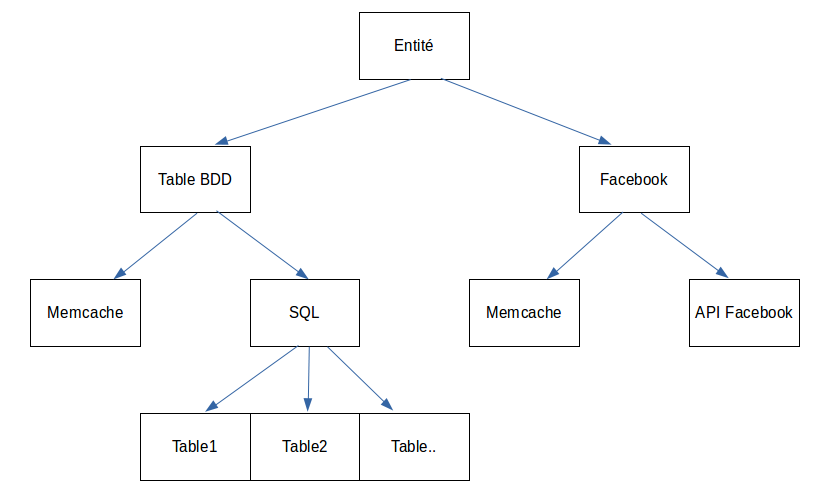

YUCCA
ORM
whoami
Rémi JANOT
ORM
ORM in computer science is a programming technique for converting data between incompatible type systems in object-oriented programming languages. This creates, in effect, a "virtual object database" that can be used from within the programming language.
Why an ORM ?
- Avoid data array manipulation
- DRY
- Ease use of mocks for unit tests
Some ORM
- Doctrine
- Propel
- Eloquent (Laravel)
- Other Open Source
- Home-made
Why I don't like Home-made ORM
- Home-made ! Nothing else to say
Why love Doctrine
- Well integrated in Symfony2 and provided bundles
- Documentation / Tests / Communities
Why I don't like Doctrine
[Syntax Error] line 0, col 203: Error:
Expected Doctrine\ORM\Query\Lexer::T_WITH, got 'ON'
Expected Doctrine\ORM\Query\Lexer::T_WITH, got 'ON'
Why I don't like Doctrine
[Syntax Error] line 0, col 88: Error:
Expected Doctrine\ORM\Query\Lexer::T_DOT, got 'A'
Expected Doctrine\ORM\Query\Lexer::T_DOT, got 'A'
Why I don't like Doctrine
SELECT c0_.number AS number0, c0_.code_val AS code_val1, c0_.name AS name2, c0_.logo AS logo3, c0_.state AS state4, c0_.email AS email5, c0_.country AS country6, c0_.website AS website7, c0_.adress AS adress8, c0_.description AS description9, c0_.president AS president10, c0_.id AS id11 FROM company c0_ WHERE c0_.id = '1' AND c0_.state = 1
Why I don't like Doctrine
- Entity too (much) close to the DB schema
- Caching : hard to invalidate
- Work only with SGBDR / mongo
Rewind ?
What if we have multiple data sources for the same entity ?
a user can get his data from :
- the
usertable (1 line = 1 entity) - the
user_paramtable (1 line = 1 entity field) - counters from redis or memcache
- an API (Facebook, Google, ...)
What if we have multiple handlers for the same source ?
We can get the same datas :
- from APC
- from Memcache
- either from the
configtable and save back in Memcache and APC
What if no sharding, it's sharding with only one backend ?
- We could have an ORM ready for growing production needs
So :
Configuration - Connections
#app/config/yucca.yml
yucca:
#DB connections
connections:
default:
type: doctrine
options:
driver: %database_default_driver%
host: %database_default_host%
port: %database_default_port%
dbname: %database_default_name%
user: %database_default_user%
password: %database_default_password%
charset: UTF8
memcache_general:
type: memcache
options:
prefix: %memcache_general_prefix%
servers:
- {port: %memcache_general_port%, host: %memcache_general_host%}
message_1:
# ...
message_2:
# ...
Configuration - Schema Sharding
#app/config/yucca.yml
yucca:
#DB Schema
schema:
user:
sharding_strategy: modulo
shards:
- default
user_params:
sharding_strategy: modulo
shards:
- default
messaages:
sharding_strategy: modulo
shards:
- message_1
- message_2
Configuration - Handlers
#app/config/yucca.yml
yucca:
#Sources
sources:
user:
default_params:
fields: { id: 'identifier', created_at: {type: 'datetime'}, updated_at: {type: 'datetime'}, email: ~, password: ~, salt: ~ }
handlers:
-
type: database_single_row
table_name: user
user_params:
default_params:
fields: {id: 'identifier', fbuid: ~, twitteruid: ~}
name_field: param_name
value_field: param_value
mapping: {id: user_id}
handlers:
-
type: database_multiple_row
table_name: user_params
Configuration - Handlers
location:
default_params:
fields: { id: {type: 'identifier'}, latitude: ~, longitude: ~, bounds: {type: 'json'}, streetNumber: ~, streetName: ~, cityDistrict: ~, city: ~, zipcode: ~, county: ~, countyCode: ~, region: ~, regionCode: ~, country: ~, countryCode: ~, timezone: ~, createdAt: {type: 'datetime'} }
handlers:
-
type: memcache
connection_name: memcache
-
type: database_single_row
table_name: location
-
type: geocoding
Configuration - Entity
#app/config/yucca.yml
yucca:
#Mapping object / Sources
mapping:
MyProject\Model\User:
mapper_class_name: ~
properties:
state:
field: state_id
company:
field: company_id
sources:
- user
- user_param
Use case
$this->get('yucca.entity_manager')->load('YuccaDemo\Model\User', $user_id);
try {
$user->ensureExist();
} catch (\Yucca\Component\Source\Exception\NoDataException $e) {
throw $e;
}
How do i search when I don't have the user id ?
/**
* @var $selector \MyProject\Selector\User
*/
$selector = $this->container->get('yucca.selector_manager')->getSelector('MyProject\Selector\User');
$selector->addEmailCriteria($email);
switch($selector->count()) {
case 1: {
return $this->yuccaEntityManager->load('MyProject\Model\User',$selector->current());
}
case 0: {
throw new \Exception('No user found');
}
default: {
throw new \Exception('Multiple users found');
}
}
What is the selector ?
<?php
use \Yucca\Component\Selector\SelectorAbstract;
use Yucca\Component\Selector\Source\SelectorSourceInterface;
class User extends SelectorAbstract {
public function __construct(SelectorSourceInterface $source = null){
parent::__construct($source);
$this->options = array(
SelectorSourceInterface::ID_FIELD => array('u.id'),
SelectorSourceInterface::SHARDING_KEY_FIELD => null,
SelectorSourceInterface::TABLE => array(
'user'=>array('alias'=>'u'),
),
SelectorSourceInterface::SELECTOR_NAME => __CLASS__,
);
}
/**
* @param string $criteria
* @return \MyProject\Selector\User
*/
public function addEmailCriteria($criteria){
$this->criterias['u.email'][] = $criteria;
return $this;
}
}
And in SQL ?
SELECT u.id FROM user AS u WHERE u.email = ?SELECT u.id FROM user AS u WHERE u.email IN (?, ?)SELECT * FROM user WHERE id = ?What if my selector returns many ids
/** @var $selector \MyProject\Selector\User */
$selector = $this->container->get('yucca.selector_manager')->getSelector('MyProject\Selector\User');
/** @var $iterator \Yucca\Component\Iterator\Iterator | \MyProject\Model\User[] */
$iterator = new \Yucca\Component\Iterator\Iterator(
$selector,
$this->container->get('yucca.entity_manager'),
'\MyProject\Model\User'
);
foreach($iterator as $user) {
var_dump($user->getEmail());
}